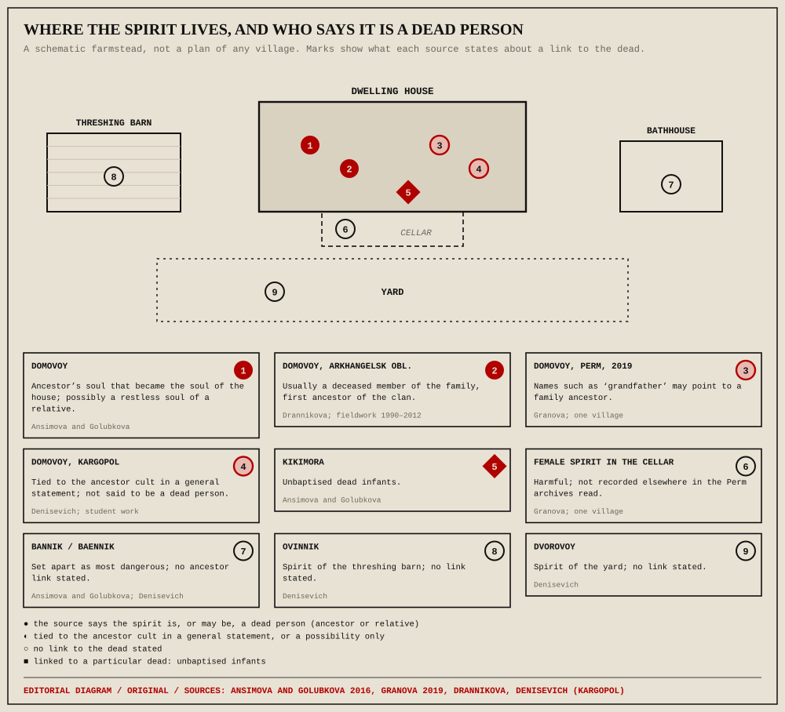
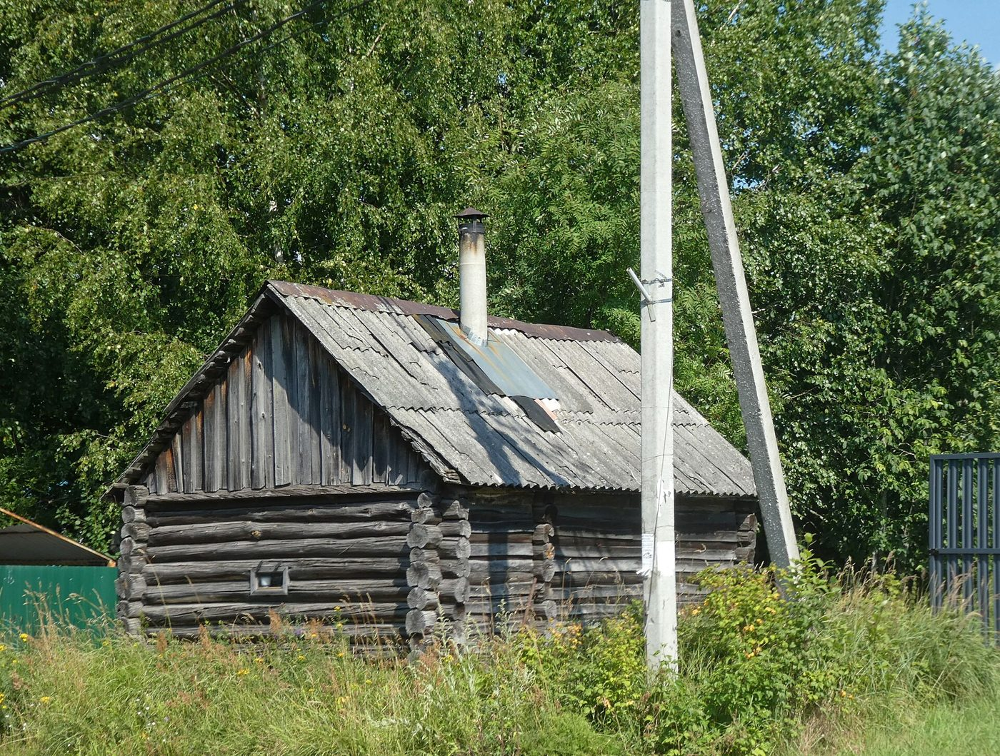
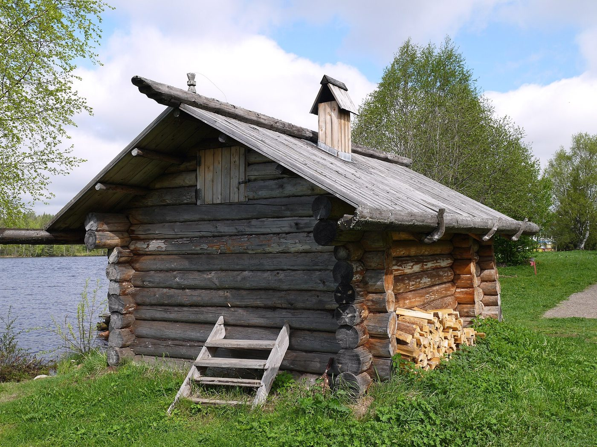

VOL. III · PLATE S · 01 / 04
HOUSEHOLD SPIRITS
The domovoy, the dead and the limits of the ancestor reading
A spirit of the house who is sometimes read as a dead ancestor. The plate sets regional studies side by side (Perm, Arkhangelsk, Kargopol and a multi-region survey), adds Zelenin’s inventory of 1927 and a Slavic synthesis of 2024, says what each can and cannot carry, and keeps the bannik and the kikimora out of the ancestor story.
Field records 1999–2019; recollections from the 1950s (Western Siberia); a survey of 1927 and a synthesis of 2024 · Russia: Perm Krai and the regions of the 1999–2015 field collections · Russian household belief
S / 01
A householder who may have been a relative
Ethnographic work on Russian belief describes the domovoy as the spirit of a house and its people. O. K. Ansimova and O. V. Golubkova, drawing on an earlier study by N. A. Krinichnaya, call him a generic ancestor: the soul of an ancestor that became the soul of the house and the family. Some of their rural informants still held that view.
The link to the dead runs through events. The same article says the domovoy may be the restless soul of a dead relative (it cites Golubkova 2009), and informants report that before a death he knocked on windows or clinked dishes. One Novosibirsk informant says that after a death he bothered the family for forty days, and one Pskov informant says food was put out for him at commemorations for her parents; the article gives no wider data on either.
Sergey Maksimov’s survey of northern peasant belief (1903, pp. 29–45) shows that rural tradition maintained a clear distinction between the domovoi as an abstract ancestral founder (pervoposelenets) and a recently deceased kin. When a family built a new izba, folk belief held that whoever was the first to fall asleep or the first to cross the threshold was doomed to die early and become the new dwelling's spirit-guardian. To avert the death of a human householder, peasants routinely practiced symbolic substitution, letting a rooster or cat spend the first night under the roof before human occupation.
S / 03
Two northern accounts that disagree
For Arkhangelsk Oblast, N. Drannikova writes that the domovoy is usually considered a deceased member of the family and the first ancestor of the clan; in one formulation he is a man who died unrepentant, and one example has him looking like the speaker’s late grandfather. She lists about twenty-three names for him and reports that a groan or a knock from him often foreshadows a death in the family. Her field material comes from expeditions of 1990–2012 and earlier collections, and no count of records is given.
For the Kargopol area of the same oblast, K. Denisevich, a student, describes a helpful ‘master’ of the household who looks like the head of the family and cares for horses and cows. Her text does not say that he is a dead person. It says only, in a general statement, that he is closely tied to the ancestor cult. In the same account the baennik of the bathhouse and the ovinnik of the threshing barn act independently, and the dvorovoy of the yard is a distinct figure whom the author treats as not wholly separate from the domovoy; the ancestor tie is discussed only for the domovoy.
The two accounts are from one oblast and give different degrees of the ancestor link. This is the plate’s reason for keeping the link as a regional report, source by source, and not as a trait of the domovoy.
S / 04 · ZELENIN
Under the stove: Zelenin’s inventory of the domovoi
Zelenin’s 1927 survey (Russian translation 1991, pp. 412–414) gives the domovoi an address. Most often he lives under the stove; northern Russians put him in the underfloor, in the corner where the stove stands, but also behind the stove, on top of it, or under the stove pillar, and less often under the door-sill, at a corner of the house, or in the attic by the chimney. The yard and outbuildings belong to a separate spirit, the dvorovoi or khlevnik, whom Zelenin asks not to be confused with the domovoi, and a further northern spirit lives in the stove itself (susui, sysoi). When the householder goes away the stove is closed with the oven fork or its damper so that the domovoi does not leave with him (citing Zavoiko, p. 105); on moving house he is carried over on a broom or on the peel used to put loaves into the oven (archive of the Russian Geographical Society, vol. II, no. 749).
He is invisible, but sometimes shows himself in the likeness of the householder, living or dead, or as an old man with long grey tangled hair, sometimes without eyebrows. Northern tales make him a small hairy man who once froze (vol. I, no. 224). Naked, he foretells poverty. There are female domovye (domania, domakha, marukha), and animal forms: most often a cat, dog, cow or calf, rarely a snake, rat or frog. Zelenin gives a northern story of a house in which a snake was killed, after which the floor was covered with sour cream and three members of the family died (vol. II, no. 867). He gives no village for it.
On origin Zelenin cites two legends, both in his view of Christian date: angels driven out of heaven fell where they fell, on a house to become a domovoi, in the forest a leshii, in water a vodianoi (vol. II, no. 784); or the domovoi is a man who died unrepentant, a zalozhnyi dead. His own reading is that the domovoi unites the cult of ancestors with that of the hearth fire, the ancestors stronger (p. 412). He derives the oldest name, mara, a nightmare spirit, and with it the names kikimora and marukha for the malicious domovoi (p. 413). That sets him against the article cited above, which traces the kikimora to unbaptised infants: two scholarly derivations, neither of them an informant’s explanation.
As to behaviour, Zelenin says the domovoi is in general not malicious but takes revenge when angered: pressing on a sleeper, warm for good and cold for illness; groaning and weeping when trouble threatens the house; plaiting the master’s beard; knocking, pinching, smashing crockery, especially when new owners settle in beside the old domovoi (pp. 413–414). Most of this is told of East Slavs or ‘northern Russians’ together, and the passage does not date it.

S / 05
Not every spirit of the house is an ancestor
The same article that calls the domovoy an ancestor sorts other household spirits differently. It places the bannik and his female counterpart, the obderikha, in a separate group as the most dangerous and malicious, and it traces the kikimora not to ancestors but to unbaptised dead infants.
So the plate does not offer one class of ‘house spirit’. Even for the domovoy the ancestor reading is one scholar’s argument, repeated by others and kept by some informants; the 2015 urban survey did not find it, and Granova offers it as a possibility in the names. The atlas keeps it as a contested reading, not as the explanation.
Svetlana Tolstaya, summarising Slavic demonology, says the same of house-spirits in general: they come from honoured ancestors of the family, while mermaids, water spirits and vampires come from other kinds of dead. She also notes that the Polesie domovik differs from the Russian domovoy, since it resembles the householder but has marks of a walking dead man or a devil (2024, pp. 11–12). This is one scholar’s synthesis, with Polesie as her main field, so it supports the ancestor reading for the Slavs as a whole but does not date or map it for Russia.
S / 06
Who is linked to the dead, by which source
| Spirit | Place | Link to the dead | Source and status |
|---|---|---|---|
| Domovoy | House | Ancestor’s soul that became the soul of the house; possibly a restless soul of a relative | Ansimova and Golubkova; reading cited to Krinichnaya |
| Domovoy (Perm, 2019) | House | Names that may point to a family ancestor | Granova; a possibility, one village |
| Domovoy (Arkhangelsk Oblast) | House | Usually a deceased family member, first ancestor of the clan; in one formulation a man who died unrepentant | Drannikova; fieldwork 1990–2012, no count |
| Domovoy (Kargopol) | House and barn | Closely tied to the ancestor cult in a general statement; not said to be a dead person | Denisevich; student work |
| Bannik, obderikha; baennik (Kargopol) | Bathhouse | Set apart as the most dangerous; no ancestor link stated | Ansimova and Golubkova; Denisevich (baennik) |
| Kikimora | House | Unbaptised dead infants | Ansimova and Golubkova |
| Ovinnik | Drying barn | Spirit of the threshing barn; no link to the dead stated | Denisevich (Kargopol) |
| Domovoi (Zelenin, 1927) | Under the stove | Two legends of origin (a fallen angel; a man who died unrepentant); his own reading joins the ancestors with the hearth fire, the ancestors stronger | Zelenin, pp. 412–414; one compiler, no villages |
| House spirits in general (Slavic synthesis) | — | Said to come from honoured ancestors of the family; the Polesie domovik has traits of a walking dead man or a devil | Tolstaya, 2024, pp. 11–12; Polesie material, not Russian-specific |



House spirit
The domovoi in Zelenin's survey (1927)
Домовой по сводке Зеленина (1927)
Original
English translation
Excerpt This atlas paraphrases Zelenin's § 25 on the domovoi, rendering his list of characteristics without quoting the text verbatim.
Zelenin's § 25 synthesises material from dozens of gubernii on the domovoi. He identifies three layers: a folk belief in a hairy, house-bound spirit; a set of practices for appeasing it; and a substratum of ancestor belief in which the spirit is identified with a dead family member or founder. Zelenin does not resolve whether these are one belief or three.
- домовой
- House spirit. The word derives from 'dom' (house). Regional variants include 'domovnik', 'domashnik', 'dvorovoi'.
Source D. K. Zelenin, Vostochnoslavianskaia etnografiia (Russian translation, Moscow, 1991; German original Leipzig, 1927), § 25.
Rights PARAPHRASE. Zelenin died in 1954; original published 1927 in German. Russian translation published 1991. This atlas paraphrases, not quotes.
Apparatus sources · related plates · terms
Sources for this plate
- ansimova2016 Ansimova, O. K.; Golubkova, O. V. — Mythological Characters of the Domestic Space in Russian Folk Beliefs: Lexicographic and Ethnographic Aspects (2016)
- granova2019 Granova, M. A. — Мифологическая традиция поселка Северный Коммунар Сивинского района Пермского края: представления о домовом (2019)
- culture-house-spirits Culture.ru (state cultural portal), author not shown — Какие духи дома почитались на Руси? (n.d.)
- drannikova-north Drannikova, N. V. — Домашние духи-«хозяева» в севернорусском и норвежском фольклоре (типологические аспекты) (n.d.)
- denisevich-kargopol Denisevich, K. N. (student, RGGU) — Домовой и домашний скот в поверьях Каргополья (n.d.)
- zelenin1927 Zelenin, Dmitry K. — Vostochnoslavianskaia etnografiia (Russian translation of Russische (Ostslavische) Volkskunde, Berlin–Leipzig 1927), transl. K. D. Tsivina (1991 (German original 1927))
- tolstaya2024 Tolstaya, Svetlana M. — The Living and the Dead in Slavic Folk Culture: Modes of Interaction between Two Worlds (2024)
- maksimov1903 Maksimov, S. V. — Nechistaia, nevedomaia i krestnaia sila (1903)
URLs, access dates and limitations are in the bibliography.